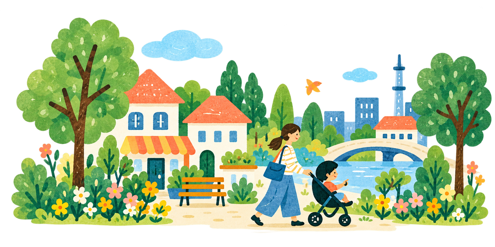

授乳・おむつ替えができる施設を、公開データから探します。
収録範囲と更新日を確認してご利用ください。
最大3候補の比較ノート。公式サイトで調べた情報を、自分で入力・貼り付けて使います。統計の数字が自動で入る機能はありません。メモはこのブラウザーに保存されます。
一覧の「家族の候補にする」で場所を保存。災害ごとの利用条件を確認して、家族で共有してください。
東京都「赤ちゃん・ふらっと」公式CSVの施設名のある1,645件を収録しています（2026年9月14日時点）。公式ページの記載1,654件とは差があり、CSVとExcel双方で確認した実データを使用しています。施設個別の設備欄・緯度経度はないため、制度の設備基準と現地の状況を区別して表示します。東京都外の施設は未収録です。
全国から候補を選んで、公式統計・ハザード情報を確認し、通勤・保育・住まい・支援制度を比較するノートです。公式リンクを開き、対象の市区町村を選んで調べた情報を直接入力・コピーして貼り付けられます。統計の数字は自動入力されません。地域の点数付けや、未確認の施設数による順位付けは行いません。
国土地理院の指定緊急避難場所・指定避難所データ計199,263件、47都道府県の公開レコードを収録。自治体ごとのデータベース更新日を表示します。全自治体・全施設が掲載されているとは限りません。
指定緊急避難場所は災害の危険から命を守る場所、指定避難所は危険がなくなるまで一時的に生活する施設です。災害の種類に合う場所を確認し、詳細・最新情報・開設状況は自治体へ確認してください。福祉避難所の利用条件も自治体の案内を確認してください。
国土地理院「指定緊急避難場所・指定避難所データ」、東京都福祉局「赤ちゃん・ふらっと一覧」を表示・検索用に加工して利用しています。本アプリは両機関の公式アプリではありません。
保存した場所、比較ノート、家族のメモはこのブラウザーに保存します。別の端末への同期はありません。現在地は「現在地から直線距離順に」を押した場合だけ利用し、位置座標は保存しません。印刷・PDF出力でメモを持ち出せます。